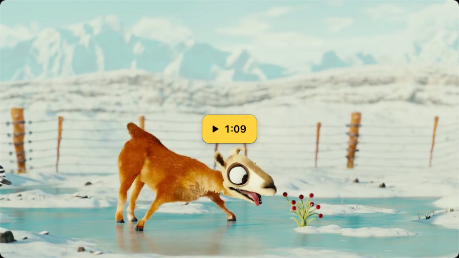
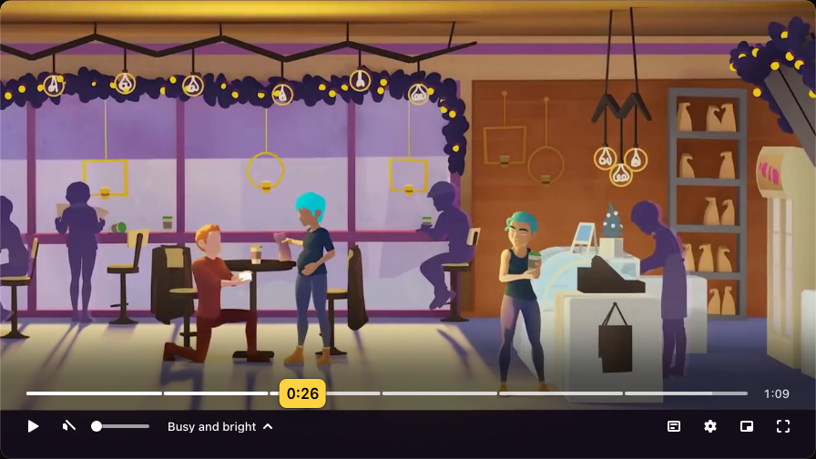
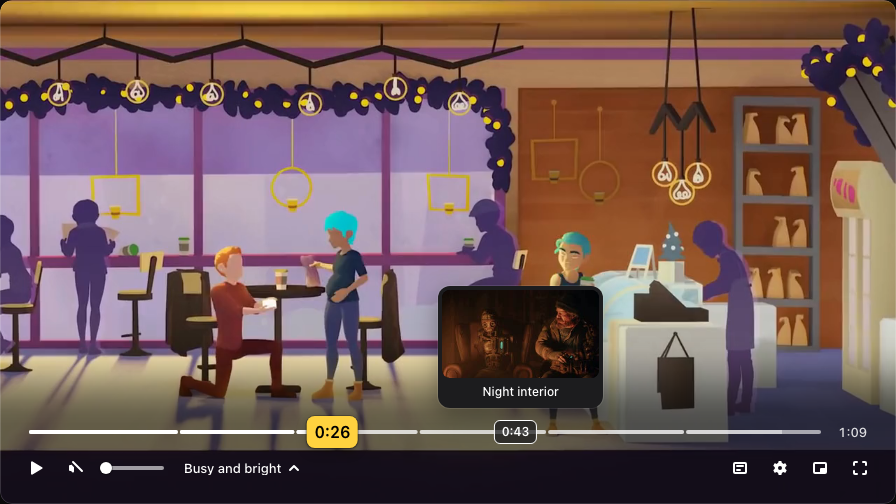
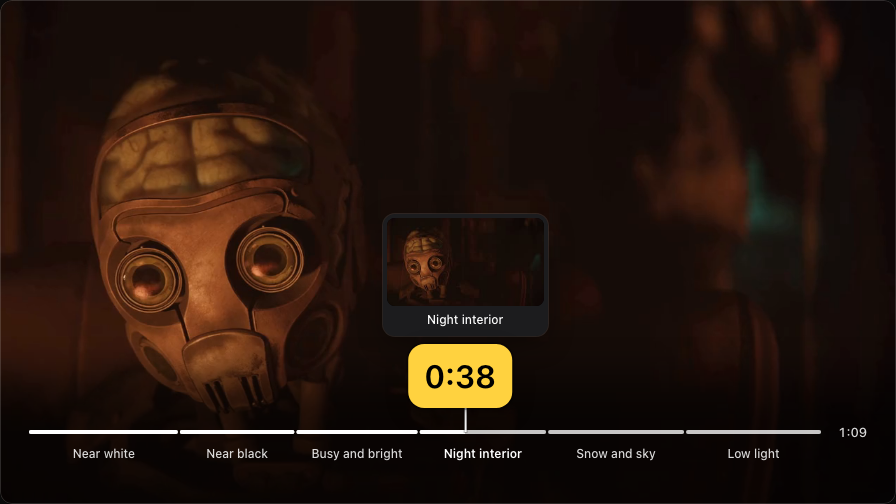
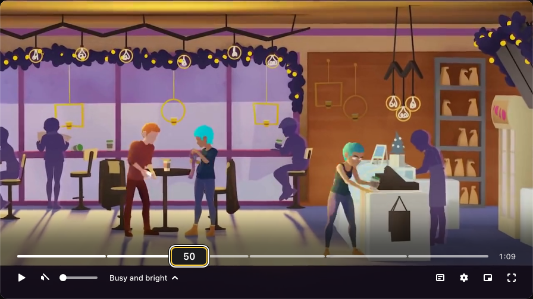
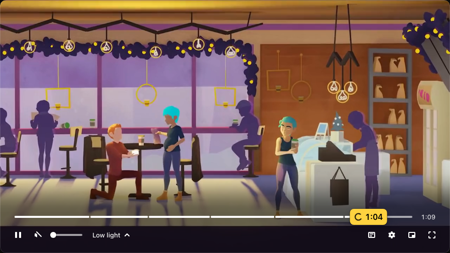
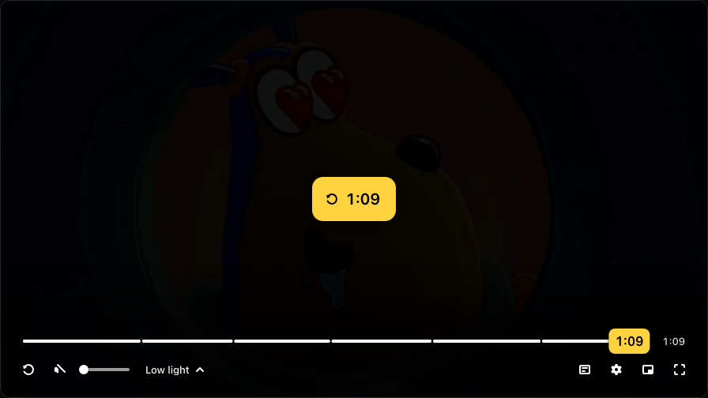

Usher
The playhead tells the time.
Usher is a Video.js 10 skin built on one object: a solid marker on the timeline that holds the current time. It is the clock, the handle, the start button and the replay button, so the button row never makes room for a number.
One marker, seven jobs
The same solid block does every job that involves time, from before the first frame to after the last.
-

1Start. Before playback it is the play button, with the length of the video.
-

2Clock. While the video plays, it holds the current time at its place on the line.
-

3Hover. Point at the line and a hollow marker shows the time there, with a thumbnail and the chapter.
-

4Scrub. Drag it and it lifts above the line with larger numerals, and the chapter names appear under the line.
-

5Typed time. Focus it and press Enter, or double-click it, then type a time to go there.
-

6Buffering. While it waits for data, a spinner sits inside it, before the numerals.
-

7Replay. At the end it returns to the centre as the replay button.
Any footage
White print sits straight on the picture over one eased scrim: no bar, no blur. These three players are paused on the brightest, darkest and busiest parts of the reel.
-
Bright -
Dark -
Busy
Any size
Nothing in the row wraps, and a 1:00:00 time only widens the marker.
One grammar from 240 to 1360 pixels: the line first, then the row. At 384 and under, the title, chapter, volume and picture-in-picture step aside. At 240 the marker shrinks to a bead until you point at the line.
Make it yours
Usher reads the standard Video.js custom properties. Set them on media-container and every fill,
corner and numeral follows.
Keyboard and touch
Every stock shortcut and gesture is kept. Shortcuts work while the player has focus: click it or tab into it.
Keyboard
| Key | Action |
|---|
Touch
Details
The decisions behind the pixels, in the order you would notice them.
- Marker placement
-
The marker sits at
left: pand moves back by the same share of its own width withtranslate: -p, where p is the played fraction. At 0% its left edge meets the start of the line, at 100% its right edge meets the end, and nothing is measured. - Concentric radii
-
The frame radius r is
--media-border-radius, 12px by default. Buttons and the marker use R = min(2r/3, 16px); sheets use min(1.5R, R + 4px) around 4px of padding, so inner and outer corners stay concentric and all reach 0 together. - The icon grid
-
Every icon is drawn on an 18px grid with a 14px live area, its bars and cuts 2px on whole pixels. The pause bars are 4px wide, the same as the line, and play sits right of the box centre so it looks centred.
- Tabular numerals
-
Every number is set with
tabular-nums lining-nums, so the marker keeps its width while the seconds change. No number lives in the button row, so a host font without tabular figures cannot push it. - The scrim
- Two-tone focus ring
-
One ring everywhere: a 2px white band between two 1px black edges, so it reads on snow and on night. Controls never hide while anything inside the player has keyboard focus.
- Reduced motion
-
Every duration comes from the stock tokens, which drop to 50ms or less when motion is reduced. Movement becomes a state change or a fade; the press scale and the turning gear switch off.
- Forced colours
-
The scrim becomes a solid Canvas band, the played line Highlight, and the marker Highlight with HighlightText numerals and a CanvasText edge. The focus ring turns Highlight.
- Right to left
-
The line and the row keep their left-to-right order, as time does on a timeline, while text, menus and chevrons follow the language.
Icons
25 icons drawn for Usher: filled shapes on an 18px grid, solid for on and hollow for off. Each one is shown four times larger over its grid, and at its real size in a 40px button.
Use it
Usher is plain HTML and CSS on top of Video.js 10. Three steps put it on your site.
-
Copy the skin
Install Video.js 10, then copy this project's
src/folder into yours, here asusher/.Terminalnpm install @videojs/html@10.4.0 -
Import it
Import the player and
video/skin.tsonce. The skin brings its CSS, icons and elements.JavaScriptimport '@videojs/html/video/player'; import './usher/video/skin'; -
Paste the markup
Paste
video/skin.htmlinside<video-player>and put your video where its first comment says.HTML
Usher is free to use and change under the Apache License 2.0, like Video.js itself.
Credits
The demo reel is cut from open movies by the Blender Foundation, licensed under Creative Commons Attribution 4.0.
- Built with Video.js 10
- Open the workbench to try every option, language and direction.
- Open the player on its own